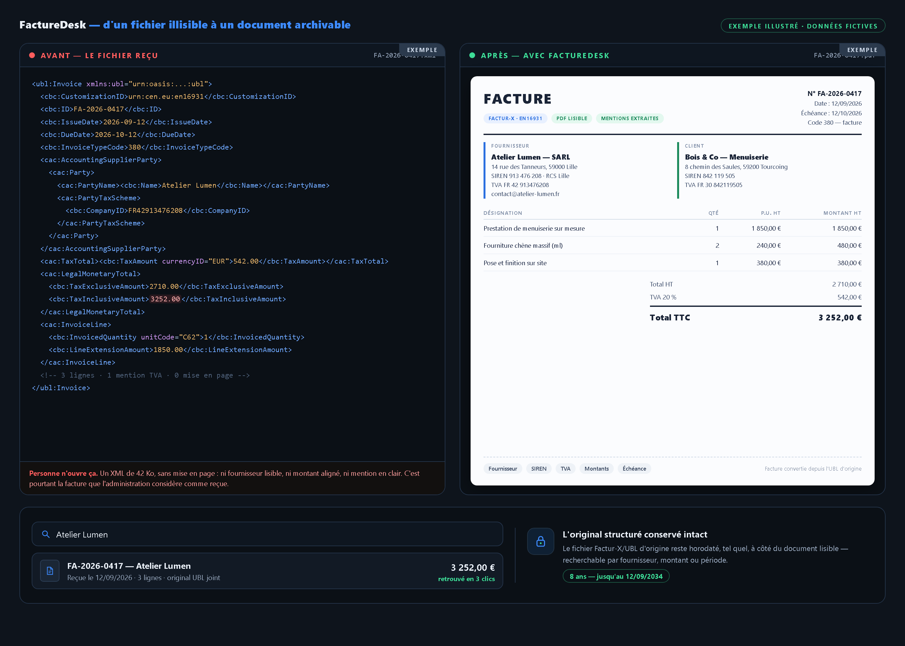

Un fournisseur vous envoie une facture électronique que votre ordinateur n'ouvre pas. Pour l'administration, elle est reçue — et le délai d'archive a commencé à courir.

Depuis le 1er septembre 2026, toute entreprise assujettie à la TVA en France — la micro-entreprise et l'artisan comme la grande société — doit pouvoir recevoir des factures électroniques structurées (Factur-X, UBL, CII) via une plateforme agréée. Un PDF par email ne suffit plus comme format d'échange. Résultat : un fichier que votre ordinateur n'ouvre pas, des mentions obligatoires à retrouver à la main, et une archive à conserver huit ans dans sa forme d'origine. FactureDesk est la boîte de réception, le convertisseur et l'archive — pour les entreprises qui n'ont pas d'équipe comptable.
Une menuiserie à deux personnes, 30 factures fournisseurs par mois.
Prenons une menuiserie de deux personnes. Elle reçoit une trentaine de factures fournisseurs par mois : tantôt un XML qu'aucun logiciel n'ouvre, tantôt un PDF, souvent un scan ou une photo de papier. Personne ne les traite « à la chaîne » : on ouvre, on vérifie, on renomme, on classe — environ 8 minutes par facture, le soir, entre deux chantiers.
Trente factures × 8 minutes, c'est 4 heures par mois, soit 48 heures par an. Au tarif d'une heure d'administratif facturée 25 €, ce travail « invisible » coûte 1 200 € par an — sans compter les rattrapages. Et côté conformité : la facture non conforme ou reçue hors plateforme agréée est sanctionnée 50 € par facture, tandis que l'original structuré doit rester conservé 8 ans — un dossier imprimé ne remplace pas l'original.
FactureDesk : la facture électronique arrive via votre plateforme agréée, les PDF et scans par une adresse de réception dédiée. Tout est converti en document lisible, les mentions obligatoires sont extraites, et l'original est archivé 8 ans. À partir de 9 €/mois, soit 108 €/an face aux 1 200 € de temps perdu.

Comment ça marche
Ce que vous recevez
Une seule boîte pour tout ce qui entre, et tout ce qui doit ressortir proprement — même trois ans plus tard, quand le contrôle arrive. Voici, en clair, les quatre choses que votre abonnement met dans vos mains.
En quoi ça aide : vous arrêtez de chercher un fichier que vous ne pouvez pas ouvrir, vous n'imprimez plus pour conserver, et votre cabinet repart chaque mois avec un export propre — sans que rien ne repose sur votre mémoire.
Vérification gratuite — ce que votre réception vous coûte déjà
Indiquez ce que vous recevez réellement aujourd'hui et le temps que ça vous prend. FactureDesk calcule le coût annuel de votre traitement manuel, et ce qu'il vous en reste avec l'abonnement.
—
La réforme a créé un format que les petites structures ne savent pas lire. FactureDesk le rend lisible et l'archive avant qu'il ne devienne un problème.
Repères : France — réception obligatoire pour toutes les entreprises assujetties à la TVA depuis le 1er septembre 2026, émission au 1er septembre 2027 ; amende de 50 € par facture non conforme et 500 € par transmission d'e-reporting manquante (loi de finances de février 2026). Allemagne — réception obligatoire pour tous les échanges B2B depuis le 1er janvier 2025, avec conservation de l'original structuré pendant 8 ans. Espagne — Verifactu obligatoire au 1er janvier 2027. Sources : e-invoicing.org, economie.gouv.fr, Avalara.
Ce que vous recevez concrètement
Regardez une facture d'artisan de bout en bout. À gauche, le fichier Factur-X/UBL tel qu'il arrive : un XML que votre ordinateur n'ouvre pas. À droite, le même document converti en facture lisible, mentions extraites. En dessous, l'archive où l'original est conservé intact et retrouvé en trois clics — huit ans durant.

EXEMPLE — facture d'Atelier Lumen (données fictives). Avant / après la conversion, et l'archive qui conserve l'original huit ans.
Le parcours de réception, en images
Tarifs
1 entreprise. Adresse de réception + branchement à votre plateforme agréée, jusqu'à 50 factures reçues par mois, conversion en document lisible, extraction des mentions obligatoires, archive 8 ans et export mensuel.
Pour la micro-entreprise, l'artisan et l'indépendant qui reçoivent des factures et ne veulent plus y passer leurs soirées. Moins de 3 € par semaine : c'est le prix de dix minutes de votre temps.
Factures illimitées, jusqu'à 3 utilisateurs, recherche plein texte dans l'archive, relances fournisseurs pour les factures non conformes, et export prêt à déposer dans l'outil de votre cabinet.
Pour les structures qui reçoivent beaucoup, ou qui veulent que leur expert-comptable reparte avec un export propre chaque mois sans rien ressaisir. L'émission électronique vous attend au 1er septembre 2027 — le jour où elle arrive, votre réception est déjà en ordre.
L'archive qui tient huit ans
Chaque facture reçue garde son original structuré, horodaté, avec ses données extraites à côté. Vous retrouvez une facture par fournisseur, par montant ou par période — même trois ans plus tard, quand le contrôle arrive.
Huit ans, c'est long pour un tiroir. C'est court pour une archive qui se cherche en trois clics.
Questions fréquentes
Je suis une micro-entreprise : suis-je vraiment concerné dès maintenant ?
Pour la réception, oui — sans exception de taille. Depuis le 1er septembre 2026, toute entreprise assujettie à la TVA en France, y compris une micro-entreprise, doit être en mesure de recevoir une facture électronique structurée via une plateforme agréée. L'obligation d'émettre et le e-reporting vous concernent au 1er septembre 2027.
Concrètement, qu'est-ce que je dois faire ?
Deux choses : choisir une plateforme agréée (l'annuaire officiel en compte une centaine) et pouvoir ouvrir et conserver ce qui en sort. FactureDesk prend la seconde partie — et sert aussi de boîte pour tout ce qui continue d'arriver en PDF par email. Si vous n'avez pas encore choisi de plateforme, nous le faisons avec vous à la mise en route.
Qu'est-ce qu'une « plateforme agréée » ? Le portail public ne suffit pas ?
La plateforme agréée est un prestataire immatriculé par l'État, seul habilité à transmettre vos flux à l'administration. Le portail public de facturation est devenu un annuaire : il n'échange plus de factures. Chaque entreprise doit donc avoir la sienne. FactureDesk se branche au-dessus de celle que vous choisissez — nous ne la remplaçons pas.
Mes fournisseurs m'envoient encore des PDF et des scans. C'est un problème ?
Pour la conformité, le PDF seul n'est plus un format d'échange valable depuis le 1er septembre 2026. Dans les faits, vos fournisseurs vont continuer à vous envoyer des PDF et des photos pendant des mois. C'est exactement pour ça que FactureDesk a une adresse de réception : le structuré d'un côté, le reste de l'autre, tout dans la même archive.
Quelles sont les sanctions si je ne fais rien ?
Facture non transmise au format électronique : 50 € par facture. E-reporting manquant : 500 € par transmission. L'absence de plateforme agréée est sanctionnée après mise en demeure. Le « droit à l'erreur » annoncé pour 2026-2027 suspend la sanction si vous régularisez — il ne l'annule pas.
L'archive de huit ans, c'est obligatoire en France aussi ?
La conservation de l'original structuré pendant huit ans est explicitement exigée en Allemagne depuis 2025, et c'est la durée de référence retenue par la plupart des plateformes agréées en Europe, cohérente avec les obligations comptables françaises. Un tirage papier ou une capture d'écran ne remplace pas l'original : FactureDesk conserve le fichier d'origine.
Est-ce que ça remplace mon expert-comptable ?
Non. FactureDesk fait la réception, la conversion et l'archive ; l'expert-comptable garde la comptabilité et le conseil. En formule Pro, il reçoit un export mensuel prêt à intégrer — c'est du temps de ressaisie en moins pour tout le monde.
Peut-on annuler ?
Oui — mensuel, sans engagement, annulation en un clic depuis la page de paiement Stripe. Les données restent exportables pendant la période d'archive.
⭐ Avis clients
Vous testez FactureDesk ? Laissez un avis (il part directement à notre équipe) :
Commencer maintenant
La vérification ci-dessus est gratuite et prend trente secondes. L'abonnement démarre à 9 €/mois, payé de façon sécurisée par carte via Stripe. Vous préférez en parler d'abord ? Nous répondons sous 24 h ouvrées :
💳 S'abonner à Essentiel — 9 €/mois
Un souci de paiement ou une question ? Écrivez-nous — réponse sous 24 h ouvrées :